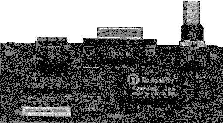

Previous
Next
TOC
Die große Akzeptanz der Ethernet-Netze beruht auf der Einsatzmöglich-
keit unterschiedlicher physikalischer Medien:
a) Yellow Cable (Dickes Ethernetkabel); lOBase5
b) RG58 oder ,,Cheapernet''- oder lOBase2-Kabel
c) Glasfaser (LWL) 50/125 um; 62,5/125 um; seltener 100/140 pm;
auch lOBaseF genannt.
d) Twisted Pair, verdrillte Litzenleiter, UTP Kabel; lOBaseT.
In den Benennungen ,,lOBaseX'' steht
| ,,10'' für Übertragungsraten von 10 Mbit/s und
\ / | ,, 5'' für 500 m / Yellow Cable
* -| ,, 2'' für 185 m / Thin Coax (RG58)
/ \ | ,, T'' für Twisted Pair (UTP Kabel)
| ,, F'' für LWL
| ,,Base'' steht für Basisband
Realisierungen von Netzen mit unterschiedlichen physikalischen
Medien sind möglich.
Die Interfaceplatine stammt aus einer Workstation des Herstellers
Tektronix, welche ingesamt 3 verschiedene Anschlußarten für verschie-
dene Netzwerktypen zur verfügung stellt.

Kapitel IEEE 802.3 (Ethernet), Seite 2